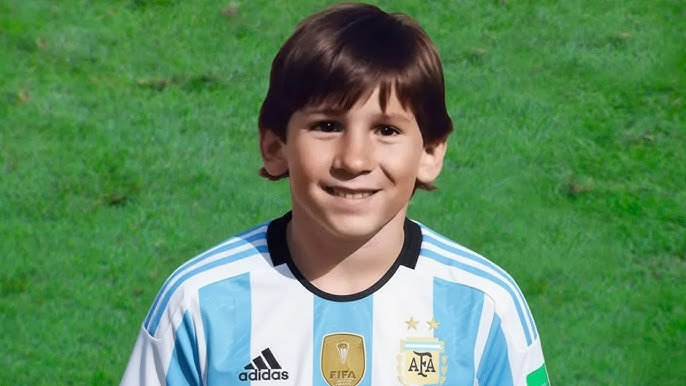
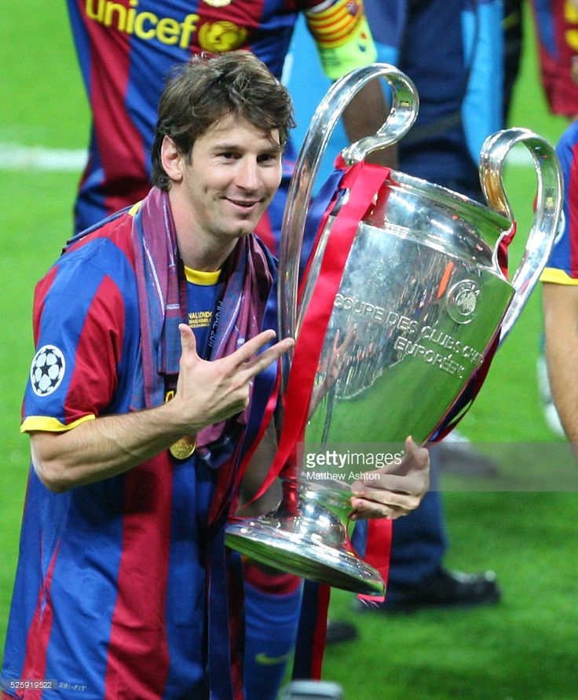
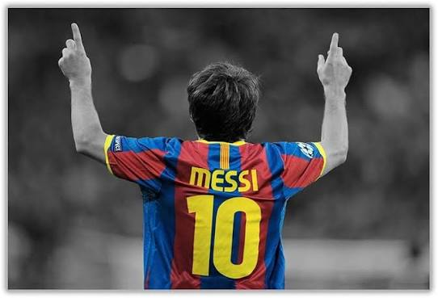
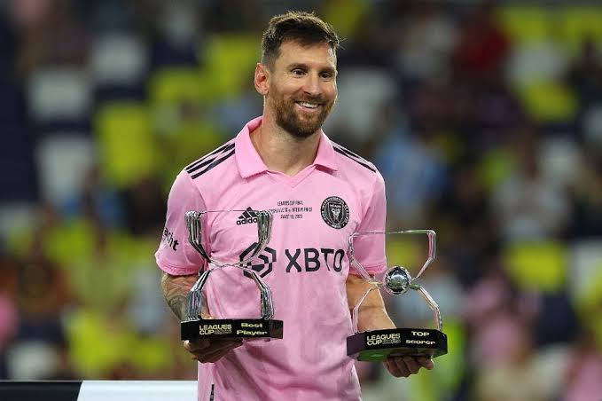
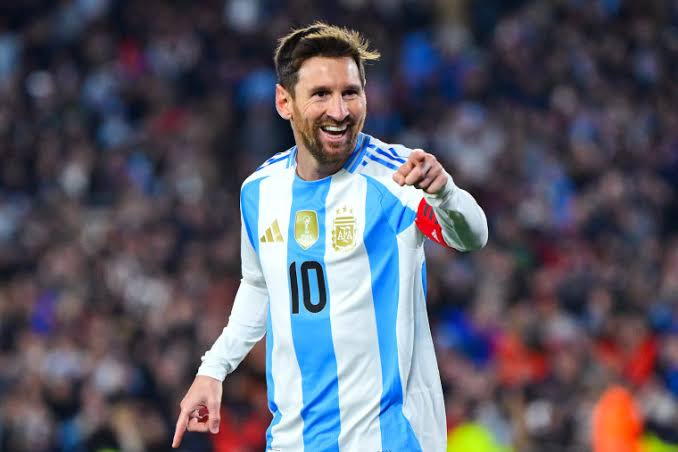

Lionel Messi is widely regarded as one of the greatest footballers in history. From a young boy with extraordinary talent in Rosario, Argentina, to becoming a World Cup champion and multiple Ballon d'Or winner, Messi's journey is a story of passion, determination, humility, and greatness that has inspired millions around the world.

Lionel Andrés Messi was born on 24 June 1987 in Rosario, Argentina. From an early age, he displayed incredible football talent while playing for local club Grandoli before joining Newell's Old Boys. At the age of 11, he was diagnosed with a growth hormone deficiency. His family struggled to afford treatment until FC Barcelona offered to pay for his medical care and invited him to join their famous youth academy.

Messi joined Barcelona's renowned La Masia academy in 2000. His exceptional dribbling, balance, close control, and football intelligence quickly made him one of the academy's brightest talents. Coaches and teammates immediately recognized his extraordinary potential, and he rapidly progressed through the youth ranks.

Messi made his first-team debut for FC Barcelona on 16 October 2004 at just 17 years old. Under manager Frank Rijkaard, he became one of the youngest players ever to represent Barcelona. Within a few seasons, he established himself as a key player and one of football's biggest rising stars.

Messi spent over two decades with FC Barcelona, winning numerous La Liga, Copa del Rey, and UEFA Champions League titles while becoming the club's all-time leading scorer. In 2021, he joined Paris Saint-Germain before moving to Inter Miami in Major League Soccer in 2023. Throughout his career, he has broken countless records and consistently delivered world-class performances.

After years of near misses with Argentina, Messi finally achieved international glory by winning the 2021 Copa América. He then led Argentina to victory at the 2022 FIFA World Cup in Qatar, cementing his place among football's greatest legends. He also helped Argentina win the 2024 Copa América.
Messi is famous for his extraordinary dribbling, vision, passing, creativity, ball control, finishing, and playmaking ability. His low center of gravity, quick acceleration, and calm decision-making allow him to beat defenders with ease. He is equally capable of scoring spectacular goals and creating chances for teammates.
Lionel Messi is considered one of the greatest footballers of all time. His remarkable consistency, incredible records, sportsmanship, and humble personality have earned him admiration across the globe. His journey from a small boy in Rosario to a World Cup-winning captain continues to inspire future generations of footballers.
"You have to fight to reach your dream. You have to sacrifice and work hard for it." — Lionel Messi